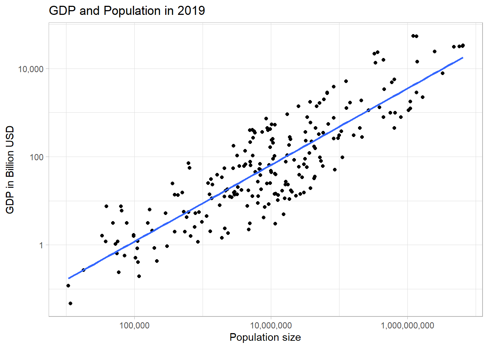

Scale
28 06 2021
#Preliminaries:
knitr::opts_chunk$set( message=FALSE, warning=FALSE) #echo = FALSE,
rm(list=ls())
library(tidyverse)
library(viridis)
library(scales)
library(stargazer)
library(WDI)
theme_set(theme_light())Organisms & Organizations
Networks play a mayor role in our life, both socially and economically, which easily can be seen by looking at the rise of the internet economy in the 21st century onward. However, networks are key mechanisms in living organisms, cities, and even companies as well. These aspects are covered in Geoffrey West’s extraordinary book ‘Scale’ (West 2017) which emphasizes the role of networks and scaling laws in the development and growth across the biological domain and humanly created organizations. Crucial for his analysis is that networks (such as vessels in animals, or pipelines in cities) are 1. invariant at their end points, 2. space filling and 3., optimization is taking place (evolution). For the biological domain nonlinear scaling is derived for a vast number of attributes based on these 3 assumptions, eg. there is a nonlinear association between between animal size and blood pressure. Furthermore, according to West the literature seems to suggest that, after taking the logarithms of variables, these correlations regularly involve number 4. West’s discussion of the role of scaling laws in the biological domain suggests that the magic number is rather 4 than 42, as suggested by Adams (2017). ;)
Scaling Laws in Practice
Let’s have a look at data from the real world (Allison and Cicchetti 1976). According to West the association between life span and body size should be about 1/4.
#sleep.txt generated from http://lib.stat.cmu.edu/datasets/sleep
#Data import and manipulation:
sleep_raw <- read_lines(
"sleep.txt",
skip = 50,
n_max = 62
)
mplt_slr <- str_locate_all(sleep_raw, "\\s[\\d\\.\\-]")
sleep_index <- c(1:length(sleep_raw))
for (i in sleep_index) {
for (j in c(1:10)) {
str_sub(sleep_raw[i],mplt_slr[[i]][j,1], mplt_slr[[i]][j,1]) <- ","
}}
sleep_df <- as.data.frame(sleep_raw) %>%
separate( col=1, sep=",", into=c("species", "body_weight_kg", "brain_weight_g", "hrs_slow_wave_sleep", "hrs_paradoxical_sleep", "hrs_total_sleep", "maximum_life_span", "gestation_time", "predation_index", "sleeping_exp._index", "overall_danger_index")) %>%
mutate(body_weight_kg=as.numeric(body_weight_kg), maximum_life_span=as.numeric(maximum_life_span)) %>%
filter(body_weight_kg!=-999 & maximum_life_span!=-999)
#How does data look like?
sleep_df %>%
select(species, maximum_life_span, body_weight_kg) %>%
top_n(3)## species maximum_life_span body_weight_kg
## 1 African elephant 38.6 6654
## 2 Asian elephant 69.0 2547
## 3 Giraffe 28.0 529#plot scaled association between life span and life expectancy:
sleep_df %>%
ggplot(aes(y=maximum_life_span, x=body_weight_kg)) + #, color=species
geom_point() +
geom_smooth(method=lm, se=FALSE, aes(color = NULL)) +
scale_x_log10(labels = comma) + #
scale_y_log10() +
scale_colour_viridis_d(option = "turbo") +
labs(title="Body weight and life-span", y="life span (years)", x="body weight (kg)")
There is a lot of variability in the data, the slope is 0.211. But we see an exponential association of 1/4 cannot be rejected statistically with the data at hand:
lm(log(maximum_life_span) ~ log(body_weight_kg), data=sleep_df) %>%
stargazer(type="text", title="Association life-span & body weight", align=TRUE, ci=TRUE)##
## Association life-span & body weight
## ===============================================
## Dependent variable:
## ---------------------------
## log(maximum_life_span)
## -----------------------------------------------
## log(body_weight_kg) 0.211***
## (0.156, 0.266)
##
## Constant 2.282***
## (2.092, 2.473)
##
## -----------------------------------------------
## Observations 58
## R2 0.504
## Adjusted R2 0.496
## Residual Std. Error 0.670 (df = 56)
## F Statistic 57.002*** (df = 1; 56)
## ===============================================
## Note: *p<0.1; **p<0.05; ***p<0.01According to West, similar to animals, cities and even companies can be described by their network structure (people are final leaves in a network). In the context cities, there is sublinear scaling (0.85) for the association between population and infrastructure and superlinear scaling (1.15) in the association between population and eg. wages. An interesting question would be whether the phenomenon of scaling extends to the level of countries as well. Leaving beside the fact that some conditions, such as space filling are not fulfilled on a country level, regular patterns between the size of countries and other country level outcomes may emerge as well. Let us look at Worldbank data:
#read WB-Data from 2019:
wdi_in <- WDI(
country = "all",
indicator = c("NY.GDP.MKTP.CD", "SP.POP.TOTL", "SP.URB.TOTL.IN.ZS"),
start = 2019,
end = 2019,
extra = TRUE,
cache = NULL,
latest = NULL, #=1
language = "en"
)
wdi_sel <- wdi_in %>%
filter(str_detect(iso2c, "\\d")==FALSE)
wdi_sel %>%
ggplot(aes(y=NY.GDP.MKTP.CD/1000000000, x=SP.POP.TOTL)) + #
geom_point() +
geom_smooth(method=lm, se=FALSE) +
scale_x_log10(labels = comma) +
scale_y_log10(labels=comma) +
scale_colour_viridis_d(option = "turbo") +
labs(title="GDP and Population in 2019", y="GDP in Billion USD", x="Population size")
The visual inspection of the correlation shows, as expected, GDP increases as population grows.
lm(log(NY.GDP.MKTP.CD) ~ log(SP.POP.TOTL), data=wdi_sel) %>%
stargazer(type="text", title="Association population size & GDP", align=TRUE, ci=TRUE)##
## Association population size & GDP
## ===============================================
## Dependent variable:
## ---------------------------
## log(NY.GDP.MKTP.CD)
## -----------------------------------------------
## log(SP.POP.TOTL) 0.868***
## (0.802, 0.933)
##
## Constant 10.910***
## (9.847, 11.973)
##
## -----------------------------------------------
## Observations 224
## R2 0.753
## Adjusted R2 0.752
## Residual Std. Error 1.393 (df = 222)
## F Statistic 676.814*** (df = 1; 222)
## ===============================================
## Note: *p<0.1; **p<0.05; ***p<0.01Comparing the associations at the country level with West’s findings concerning cities we see striking parallels. But whereas superlinear scaling of 1.15 is found for population size and wages in cities (West 2017), we find sublinear scaling of about 0.85 at the level of countries, ie. if the population doubles, GDP grows by 85 percent. Obviously, the underlying mechanisms would be interesting to reveal from an developmental perspective.